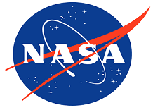
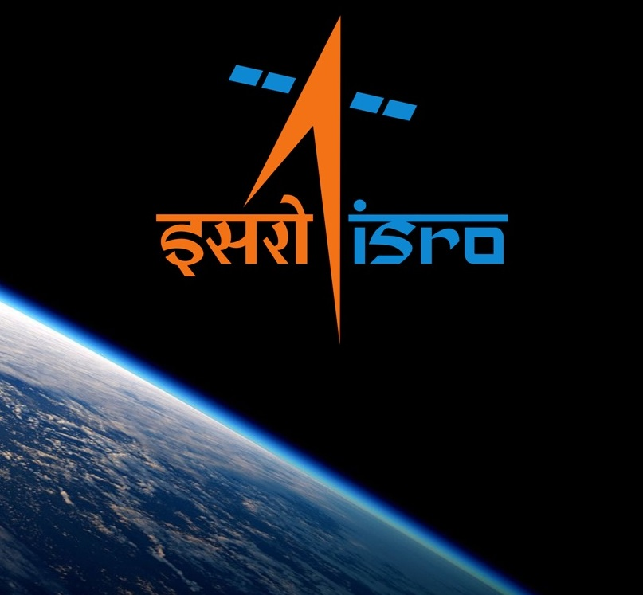
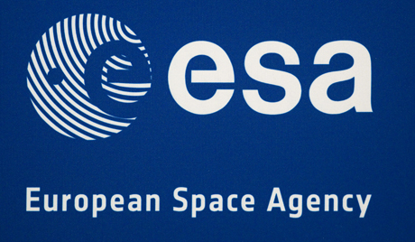

“Two possibilities exist: either we are alone in the Universe or we are not. Both are equally terrifying.”

The National Aeronautics and Space
Administration (NASA) is an independent
agency of the executive branch of the
United States federal government
responsible for the civilian space
program as well as aeronautics and
aerospace research

The Indian Space Research Organisation
is the space agency of the Indian government
headquartered in the city of Bengaluru.
Its vision is to "harness space technology
for national development, while pursuing space
science research and planetary exploration"

The European Space Agency (ESA) is an
intergovernmental organisation dedicated
to the exploration of space, with 22 member
states. Established in 1975 and headquartered
in Paris, France, ESA has an annual budget of
about US$5.77 billion (2016).
Space Exploration Technologies Corporation, better known as SpaceX, is an American aerospace manufacturer and space transport services company headquartered in Hawthorne, California, USA. It was founded in 2002 by former PayPal entrepreneur and Tesla Motors CEO Elon Musk with the goal of creating the technologies to reduce space transportation costs and enable the colonization of Mars.On December 21, 2015, SpaceX successfully returned a first stage back to a landing pad near the launch site and accomplished a propulsive vertical landing.
Read moreNew Horizons is an interplanetary space probe that was launched as a part of NASA's New Frontiers program.Engineered by the Johns Hopkins University Applied Physics Laboratory (APL) and the Southwest Research Institute (SwRI), with a team led by S. Alan Stern, the spacecraft was launched with the primary mission to perform a flyby study of the Pluto system, and a secondary mission to fly by and study one or more other Kuiper belt objects (KBOs).On July 14, 2015, at 11:49 UTC, it flew 12,500 km (7,800 mi) above the surface of Pluto,making it the first spacecraft to explore the dwarf planet.
Read morethe lastest articles
photos
videos
and
other development
in the Astronomy world
"The world of the cosmos..."